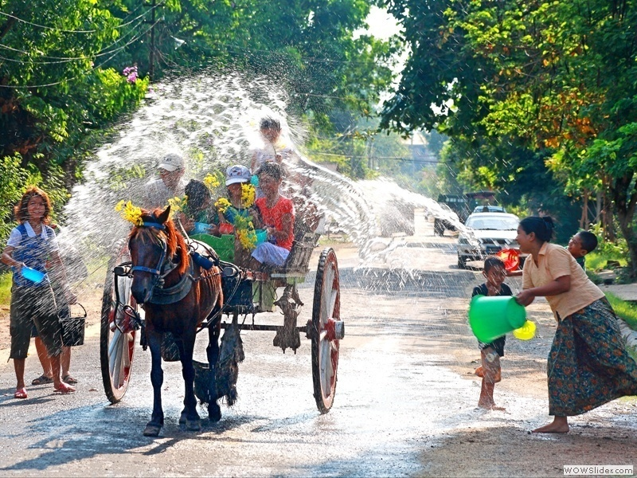
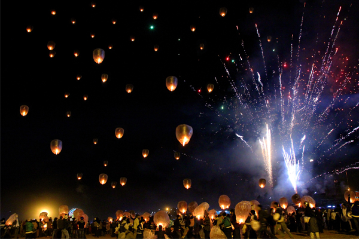
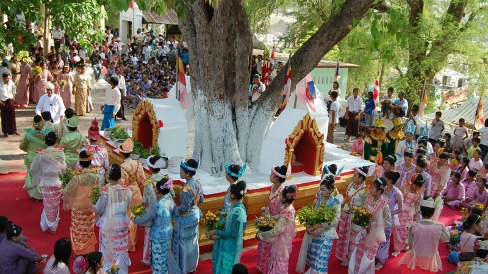
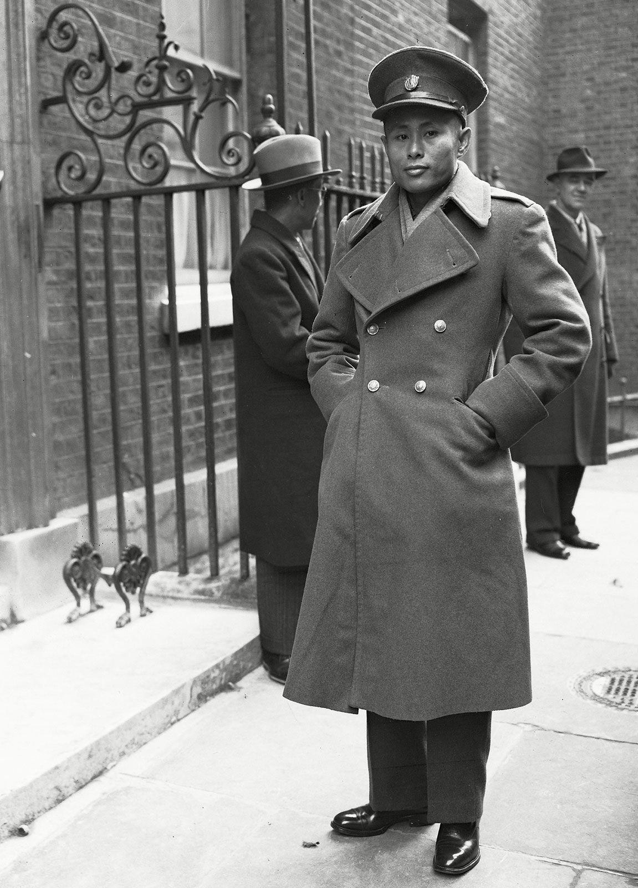
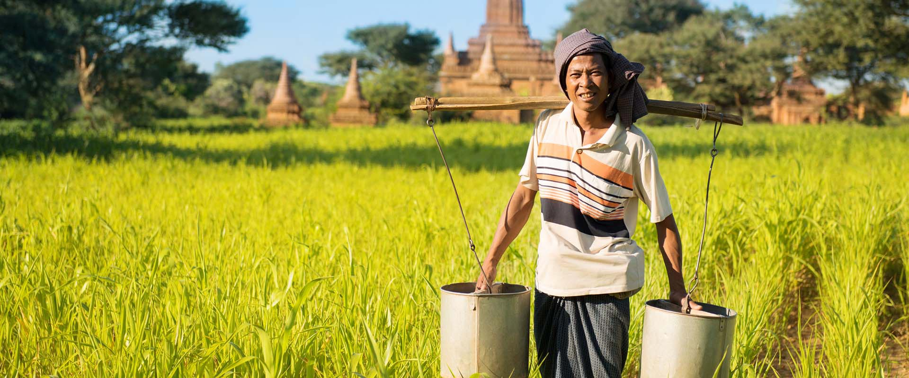
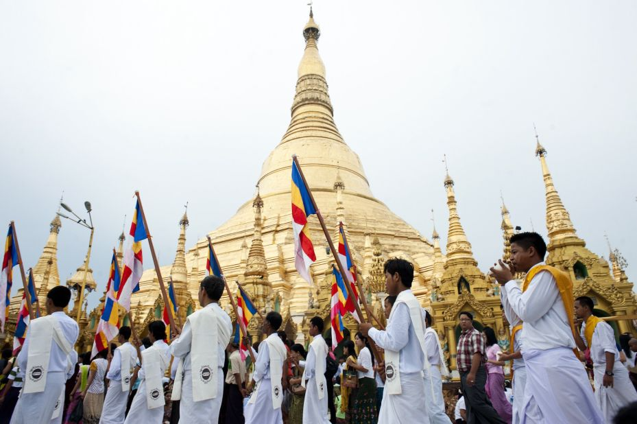

Your journey to Mandalay remains incomplete without exploring the events that are celebrated in the city. From the dazzling laterns of the Thathingyut Festival to the refreshing water of the Thingyan Festival, the city of Mandalay has it all covered. No matter what time of the year you visit, there is always an event to look forward to in the city of Mandalay.
Featured Event
Festivals

Thingyan Festival April

Tazaungmone FestivalNovember

Kason FestivalMay
Public Holidays

Martyrs' DayJuly 19th

Peasants' DayMarch 2nd

Vesak DayMay 23rd